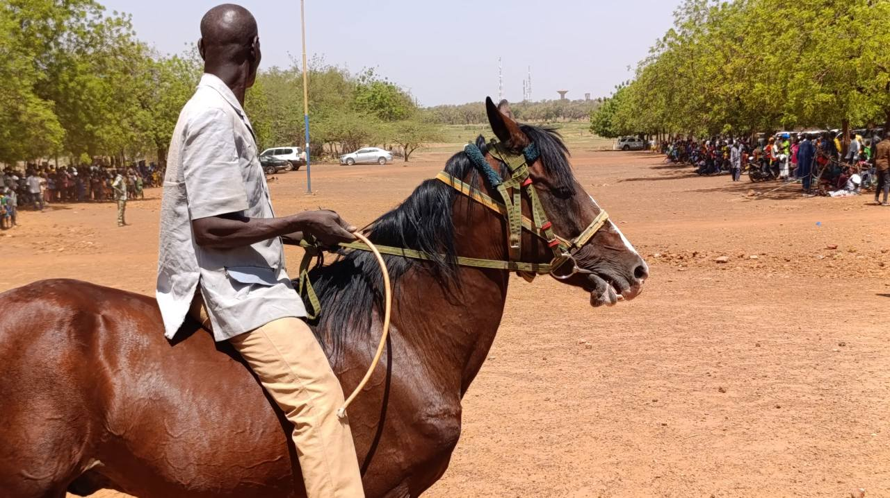
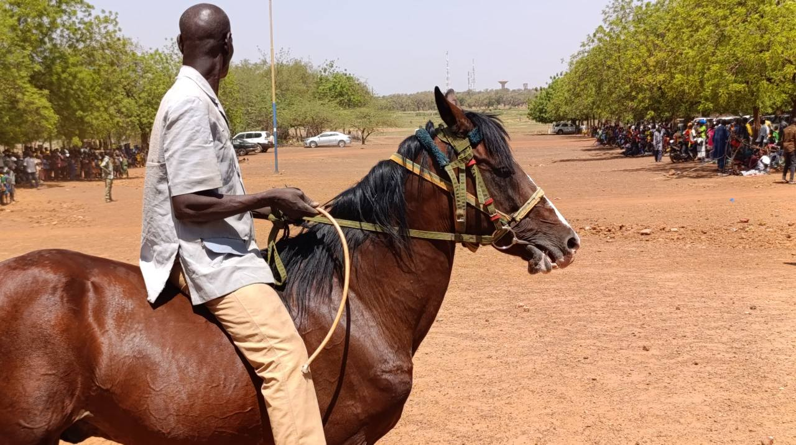
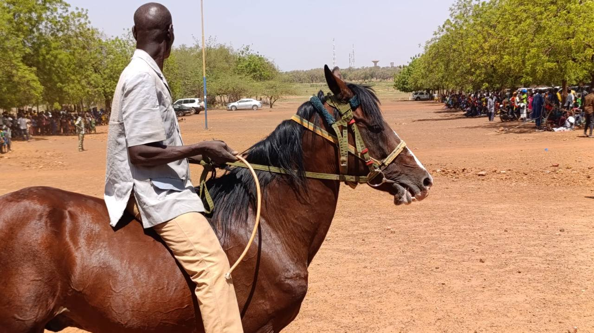

Le Naab Kitoaga est une célébration traditionnelle majeure dans le royaume du Sanmatenga au Burkina Faso. Cette fête marque la fin des récoltes et autorise la consommation des nouvelles moissons.
Elle est rythmée par des danses rituelles, des sacrifices et des offrandes faites aux ancêtres pour assurer abondance, paix et santé dans l’année à venir. Le roi et les notables y jouent un rôle central, entre tradition et cohésion sociale.
Cette fête incarne la résilience, l’unité et la richesse spirituelle du peuple. Elle demeure un moment de transmission intergénérationnelle et de reconnexion avec l’identité culturelle.
